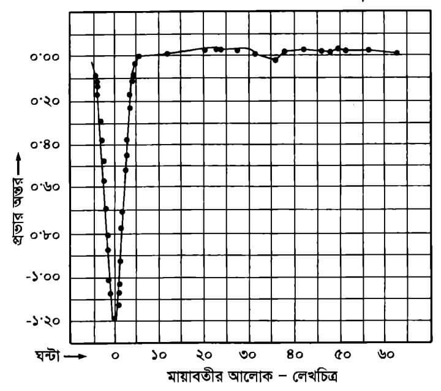

আচ্ছা কখন আমরা কোন কিছুকে অসঙ্গায়িত বলতে পারবো? "কোন কিছুকে তখনই অসঙ্গায়িত বলা যাবে, যদি সেটাকে গণিতের মৌলিক স্বীকার্য দ্বারা সংজ্ঞায়িত করা না যায়।" খুব পরিচিত একটা উদাহরণ দেখা যাক। ১÷০ = অসঙ্গায়িত (শুন্য না)৷ কিন্তু কেন? কারণ এমন কিছুই নেই যার সাথে শুন্যকে গুন করলে ১ বা অন্য কোন সংখ্যা আসে। শুন্যের সাথে যেকোন সংখ্যাকে গুন করলে শুন্যই আসবে, অন্য কোন সংখ্যা আনা সম্ভব না৷ এজন্য ১÷০ বা আরেকটু বিস্তৃত ভাবে বললে যেকোন সংখ্যা ÷ ০ = অসঙ্গায়িত। তাহলে অনির্ণেয় কখন ব্যাবহার করা হয়? ০÷০= অনির্ণেয়... Read more

আকাশের সকল তারা দেখতে একই রকম হলেও এদের প্রকারভেদ করা হয় এবং এদের বিভিন্ন নাম দেওয়া হয়। এরকম কিছু প্রকারভেদের একটি হলো বিষম তারা। বিষম তারা হলো আকাশের সেই সকল তারা যাদের উজ্জ্বলতা সব সময় একই থাকে না। সময়ের সাথে সাথে এদেরউজ্জ্বলতা বাড়তে বা কমতে থাকে। এদের উজ্জ্বলতা বাড়া বা কমার সাথে পৃথিবীর আবহাওয়ার কোন প্রকার সম্পর্ক থাকে না। আভ্যন্তরীণ কারণে যে সমস্ত তারার উজ্জ্বলতার তারতম্য ঘটে সেগুলোকে বিষম তারা বলে। এদের কত গুলোকে দূরবীনের সাহায্যে বিভক্ত করা যায়, আবার কতগুলোকে বিভক্ত করার জন্য বর্ণালী বিশ্লেষণের প্রয়োজন পরে। এই বিষম তারা গুলোকে ৫ ভাগে... Read more